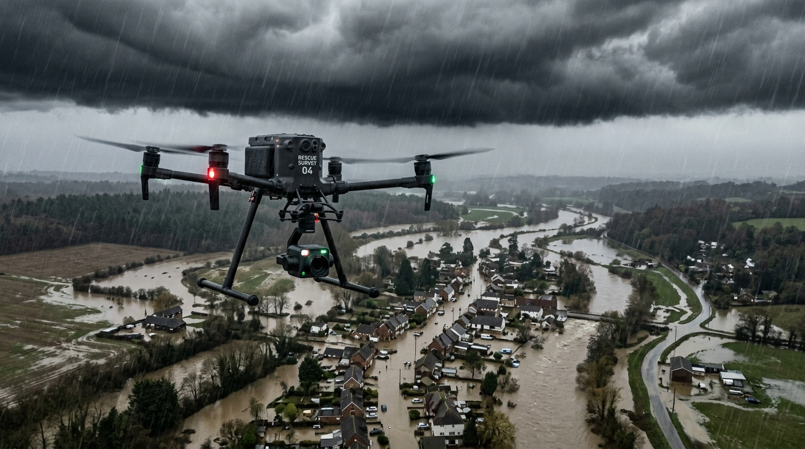
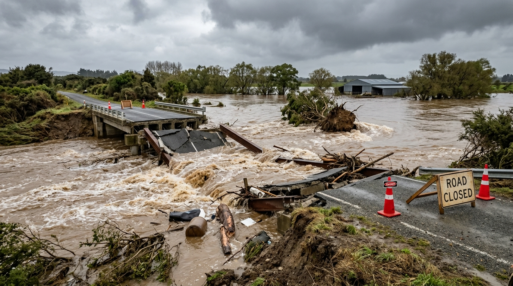
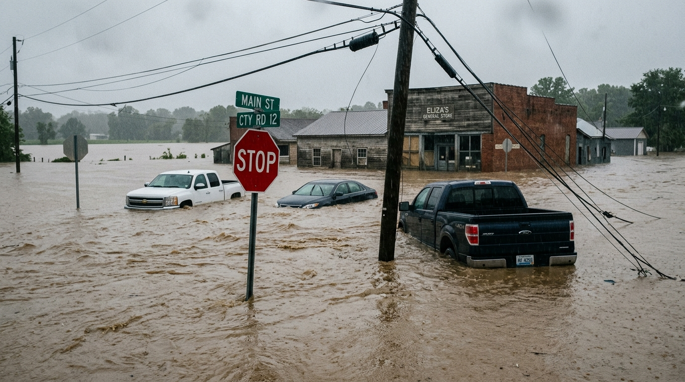
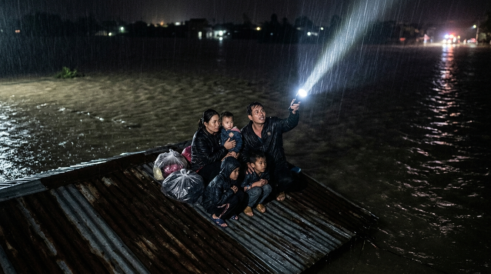
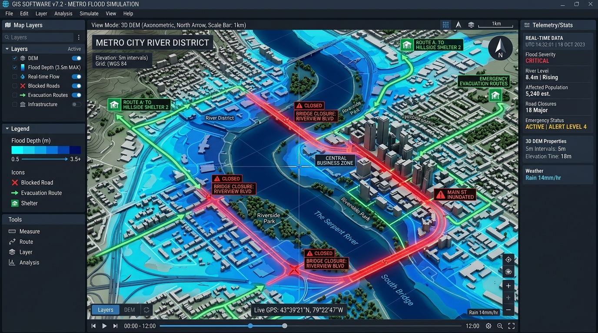
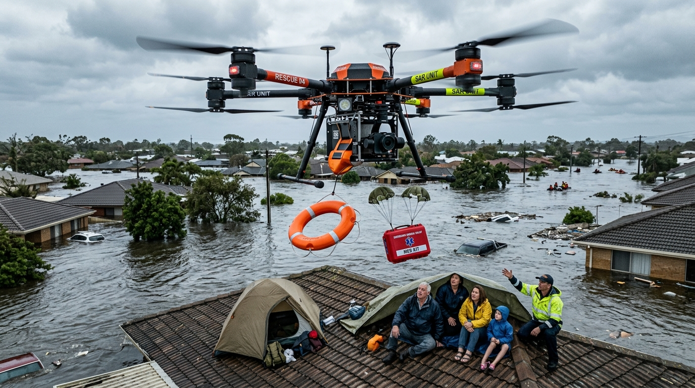
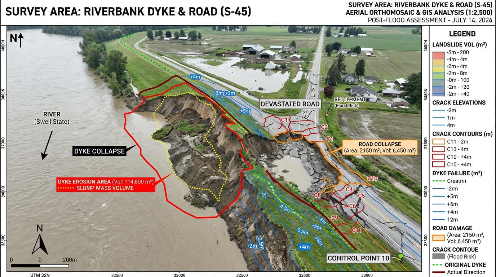

Giám sát ngập lụt & cứu nạn tự động bằng UAV
Ứng dụng UAV công nghiệp, AI và GIS để trinh sát lũ lụt diện rộng, tầm soát thân nhiệt ban đêm và tiếp tế cứu trợ khẩn cấp vào vùng cô lập.
4 Rào cản Chí mạng Trong Ứng cứu Ngập Lũ
Khi bão lũ dâng cao, phương thức quan trắc và tiếp cận truyền thống bộc lộ những khoảng trống sinh tử. Dịch vụ S0143 của GASCOLAE phá vỡ sự cô lập bằng công nghệ đường không tự động.

Thiếu thông tin hiện trường nhanh và chi tiết
Dữ liệu viễn thám vệ tinh bị mây mù che khuất, trạm quan trắc cố định thưa thớt hoặc bị mất điện, không cập nhật kịp thời sự thay đổi nhanh của hiện trường lũ cục bộ.
UAV bay tầm thấp dưới mây, thu thập ảnh độ phân giải centimet và truyền luồng trực tiếp ngay trong mưa gió, cung cấp dữ liệu tức thì cho trung tâm chỉ huy.

Khó tiếp cận khu vực ngập lụt, chia cắt
Giao thông đường bộ và đường thủy bị cô lập hoàn toàn; dòng nước xoáy, bãi đá ngầm và chướng ngại vật trôi nổi gây nguy hiểm tính mạng cho lực lượng tiếp cận.
Khắc phục trở ngại chia cắt địa hình: Thiết bị bay không người lái tiếp cận mọi tọa độ hiểm trở mà không mạo hiểm tính mạng của cán bộ chiến sĩ.

Khó xác định phạm vi, độ sâu và tuyến đường an toàn
Thiếu dữ liệu không gian thực tế để biết chính xác độ sâu ngập, các tuyến đường bị chia cắt và hướng sơ tán an toàn cho phương tiện di tản dân cư.
Tích hợp AI & DEM/DSM mô phỏng độ sâu ngập lụt, tự động vạch tuyến đường thoát hiểm an toàn và hỗ trợ điều phối xuồng cứu sinh hiệu quả.

Chậm trễ phát hiện người mắc kẹt
Quan sát thủ công bằng mắt thường rất khó xác định kịp thời vị trí nạn nhân mắc kẹt trên mái nhà, ngọn cây trong đêm tối mưa bão để ưu tiên cứu trợ khẩn cấp.
Camera nhiệt Radiometric Thermal xuyên thấu đêm tối và sương mù dày, phát hiện chính xác thân nhiệt người mắc kẹt và khóa tọa độ GPS dã chiến.
Bảng Điều Khiển Mô Phỏng Hiện Trường Lũ
Trải nghiệm khả năng phân tích dữ liệu viễn thám: Chuyển đổi giữa chế độ quang học RGB vs. ảnh nhiệt FLIR định vị nạn nhân, và mô phỏng bản đồ độ sâu ngập DEM.

Chọn Ngưỡng Mô Phỏng DEM
Mặt nước dâng ngập các rãnh thoát nước và mép đường thấp. Xe gầm cao cứu hộ và ca-nô dã chiến vẫn có thể lưu thông thận trọng. UAV tập trung quét ranh giới nước dâng để cảnh báo các hộ dân ven sông trũng.
3 Trụ Cột Tác Chiến Khép Kín Của GASCOLAE
Khác biệt vượt trội với chu trình khép kín: Từ trinh sát đường không → Phân tích AI & GIS → Trực tiếp can thiệp hậu cần thả hàng cứu nạn.
Thu thập Dữ liệu Hiện trường & AI Bóc tách Mặt nước
Triển khai UAV công nghiệp bay quét tầm thấp, ghi nhận ảnh RGB siêu nét. Mô hình Computer Vision Semantic Segmentation tự động phân loại mặt nước dâng theo từng pixel.
- Bình đồ trực giao Orthomosaic ranh giới ngập lũ
- Tự động nhận diện ranh giới nước dâng và đối tượng ưu tiên
- Truyền luồng video dã chiến tầm xa qua sóng RF độc lập
Mô phỏng Độ sâu Ngập DEM & Dẫn đường Sơ tán An toàn
Chồng xếp lớp mặt nước AI lên Mô hình Số Độ Cao (DEM/DSM) để tính toán thể tích và độ sâu ngập, vạch ra các hướng sơ tán còn an toàn và chốt tọa độ GPS nạn nhân.
- Lớp raster phân tầng độ sâu nước ngập cục bộ
- Camera nhiệt Radiometric FLIR phát hiện thân nhiệt ban đêm
- Bản đồ GIS định tuyến cho đoàn xe cứu thương & ca-nô
Cơ cấu Tiếp tế Khẩn cấp & Thả Hàng Cứu Trợ Tự Động
Tích hợp cơ cấu nhả tải thông minh mang theo phao cứu sinh tự bung, thuốc men và thiết bị liên lạc tiếp tế chính xác vào các nóc nhà bị cô lập hoàn toàn giữa dòng xoáy.
- Phao cứu sinh tự bung khi tiếp xúc nước
- Hộp thuốc sơ cứu, bông băng y tế và lương khô cao năng lượng
- Thiết bị vô tuyến dã chiến duy trì liên lạc với nạn nhân
Giải Quyết 5 Tình Huống Khẩn Cấp Điển Hình
Giám sát phạm vi & ước tính độ sâu ngập
Nước lũ dâng nhanh, cơ quan quản lý cần nắm bức tranh phạm vi ngập diện rộng và mức ngập tại từng khu dân cư trũng.
Xác định tuyến đường ngập & phân luồng sơ tán
Các trục đường chính bị chia cắt, cần chỉ dẫn thoát hiểm và phân luồng xe cứu thương, xe sơ tán dân cư an toàn.
Tìm kiếm người mắc kẹt ban đêm (SAR)
Người dân bị cô lập trên mái nhà, ngọn cây giữa dòng lũ trong đêm tối hoặc sương mù dày đặc ca-nô không nhìn thấy.

TIẾP TẾ SỐNG CÒNTiếp tế vật tư khẩn cấp bằng UAV (Gói Level 3)
Điểm cô lập hoàn toàn thuyền bè chưa vào kịp, nạn nhân kiệt sức cần tiếp tế vật tư sống còn trước khi ca-nô tới.

TÁI THIẾT SAU LŨĐánh giá thiệt hại & giám sát đê điều sau lũ
Nước rút, chính quyền và ban quản lý cần số liệu khách quan thống kê sạt lở đê điều, cầu cống, đường sá để báo cáo xin ngân sách tái thiết khẩn cấp.
6 Giai Đoạn Triển Khai Dã Chiến & Pháp Lý
Quy trình SOP phản ứng nhanh được tối ưu hóa cho tình trạng khẩn cấp thiên tai, tuân thủ nghiêm ngặt quy định an toàn bay và cơ chế hiệp đồng tác chiến.
Tiếp nhận & Thống nhất ranh giới khảo sát
Tiếp nhận thông tin cảnh báo, tọa độ vùng lũ từ Ban chỉ huy; thống nhất ranh giới khảo sát và các khu vực dân cư cô lập cần ưu tiên cao nhất.
Kiểm tra an toàn & Kích hoạt Pháp lý bay khẩn cấp
NGHỊ ĐỊNH 288/2025/NĐ-CPKiểm tra vùng cấm/hạn chế bay, kích hoạt cơ chế hiệp đồng tác chiến khẩn cấp phục vụ phòng chống thiên tai theo Nghị định 288/2025/NĐ-CP và chạy checklist GO/NO-GO an toàn.
Lập kế hoạch bay & Xuất kích quét hiện trường
Thiết lập đường bay tự động tối ưu; UAV cất cánh thu thập dữ liệu ảnh quang học RGB, ảnh nhiệt hồng ngoại và truyền luồng livestream dã chiến về trung tâm điều hành.
AI & GIS Phân tích dữ liệu không gian dã chiến
EDGE COMPUTINGMáy chủ dã chiến chạy mô hình Semantic Segmentation bóc tách mặt nước, kết hợp mô hình số độ cao DEM/DSM mô phỏng độ sâu ngập và nhận diện chính xác vị trí nạn nhân.
Bàn giao tác chiến & Kích hoạt thả hàng cứu trợ
GÓI LEVEL 3 TÁC CHIẾNChuyển giao ngay lớp bản đồ đường sơ tán an toàn và tọa độ nạn nhân cho đội xuồng ca-nô; kích hoạt cơ cấu thả phao cứu sinh tự bung và thuốc men nếu thuộc cấu hình Level 3.
Bay cập nhật nước rút & Nghiệm thu hồ sơ kỹ thuật
ĐÁNH GIÁ THIỆT HẠIThực hiện các ca bay theo dõi nước rút hoặc đánh giá thiệt hại hạ tầng đê điều sau lũ; bàn giao trọn bộ hồ sơ GIS, dữ liệu trực giao và báo cáo kỹ thuật tổng kết.
Lựa Chọn Gói Khảo Sát & Cứu Nạn Phù Hợp
Thiết kế linh hoạt theo quy mô ngập lũ: Từ giám sát ranh giới cơ bản đến tác chiến tích hợp SAR và thả hàng cứu trợ sống còn.
Giám sát Lũ Cơ bản
Basic Flood Survey
- UAV công nghiệp camera RGB quang học 4K
- Thu thập dữ liệu ảnh/video hiện trường độ nét cao
- Lập bản đồ trực giao Orthomosaic ranh giới ngập lũ
- Xuất file ảnh GeoTIFF và JPG báo cáo sơ bộ
Phân tích & Cảnh báo
Depth & Route Analysis
- Bao gồm toàn bộ năng lực của Gói Level 1
- AI Semantic Segmentation bóc tách mặt nước dâng
- Mô hình số độ cao DEM/DSM mô phỏng độ sâu ngập
- Bản đồ GIS vạch tuyến đường sơ tán an toàn cho phương tiện
- Danh mục tổng hợp các điểm dân cư bị cô lập ưu tiên
Cứu nạn & Hậu cần
SAR & Logistics Response
- Bao gồm toàn bộ năng lực của Level 1 & Level 2
- Camera nhiệt Radiometric FLIR livestream thời gian thực
- Hỗ trợ định vị thân nhiệt & chốt tọa độ GPS cứu nạn
- Trực tiếp thả phao cứu sinh tự bung và thuốc men khẩn cấp
- Báo cáo video nhật ký thả hàng và điều phối ca-nô dã chiến
7 Sản Phẩm Bàn Giao Kỹ Thuật
Toàn bộ dữ liệu được chuẩn hóa theo hệ quy chiếu tọa độ VN-2000, tương thích tuyệt đối với phần mềm GIS chuyên dụng của Ban Chỉ huy PCTT và các lực lượng cứu hộ.
Ảnh / Video & Livestream
Dữ liệu quang học độ nét cao và luồng phát trực tiếp ảnh nhiệt phục vụ trinh sát hiện trường thời gian thực.
Bản đồ Orthomosaic
Bình đồ ảnh trực giao độ phân giải cao đo đạc ranh giới ngập lũ toàn diện (GeoTIFF / JPG).
Bản đồ Độ sâu & Thể tích
Lớp dữ liệu raster phân tầng độ sâu nước ngập cục bộ hỗ trợ đánh giá mức độ nguy hiểm theo cao trình.
GIS Tuyến Sơ Tán An Toàn
Lớp bản đồ nhận diện các tuyến đường bị cắt đứt và hướng dẫn lộ trình di tản dân cư còn thông suốt.
Danh mục Tọa độ SAR
Bảng tổng hợp tọa độ GPS và ảnh nhiệt đối chiếu các điểm người và tài sản bị mắc kẹt khẩn cấp.
Nhật ký Thả Hàng Cứu Trợ
Báo cáo nhật ký và video ghi nhận kết quả thả phao cứu sinh, thuốc men thành công (Gói Level 3).
Báo cáo Đánh giá Thiệt hại Sau Lũ
Báo cáo kỹ thuật trắc địa và bản đồ so sánh biến động sạt lở đê điều, hư hỏng hạ tầng phục vụ công tác xin phê duyệt ngân sách tái thiết của địa phương.
Tại Sao Lựa Chọn GASCOLAE?
Định vị lấy UAV làm trung tâm
Kết hợp trọn vẹn giữa trinh sát đường không diện rộng, phân tích số hóa bằng AI/GIS, hỗ trợ điều phối cứu nạn và trực tiếp tiếp tế hậu cần khẩn cấp.
Chu trình tác chiến khép kín
Luồng giải pháp tích hợp từ A-Z: Bay trinh sát → AI/GIS bóc tách độ sâu & phân tuyến → Camera nhiệt định vị thân nhiệt → Thả hàng cứu trợ trúng đích.
Tuân thủ pháp lý bay vững chắc
Các chuyến bay kích hoạt cơ chế hiệp đồng tác chiến khẩn cấp, tuân thủ nghiêm ngặt Luật Phòng không nhân dân 49/2024/QH15 và Nghị định 288/2025/NĐ-CP.
Vận hành độc lập Internet viễn thông
Hệ thống trang bị mạng truyền dẫn vô tuyến tầm xa riêng biệt và máy tính biên dã chiến (Edge Computing), bảo đảm tác chiến bình thường ngay cả khi mạng di động mất điện diện rộng.
Câu Hỏi Thường Gặp Về Dịch Vụ S0143
Không. Hệ thống đóng vai trò trinh sát, chỉ dẫn đường và tiếp tế khẩn cấp, cung cấp dữ liệu hỗ trợ giúp lực lượng cứu hộ chuyên nghiệp (Cảnh sát PCCC-CNCH, Quân đội) đưa ra quyết định chính xác và an toàn hơn; không thay thế quyền chỉ huy nhà nước.
Hệ thống sử dụng các dòng UAV công nghiệp đạt chuẩn kháng nước IP55 và chịu gió giật đến 12 m/s. Tuy nhiên, nếu gặp bão lớn, gió giật vượt ngưỡng an toàn hoặc sấm sét cực đoan, quy trình an toàn bắt buộc kích hoạt lệnh NO-GO để bảo toàn thiết bị.
Dữ liệu độ phủ nước thu nhận từ UAV được kết hợp với mô hình số độ cao (DEM/DSM) độ phân giải cao để tính toán chênh lệch cao trình, mô phỏng ra độ sâu và thể tích ngập; luôn công bố kèm điều kiện áp dụng và biên độ sai số rõ ràng trong báo cáo.
Hoàn toàn tuân thủ pháp luật. Mọi chuyến bay đều kích hoạt cơ chế hiệp đồng tác chiến khẩn cấp phục vụ phòng chống thiên tai với Bộ Quốc phòng theo đúng quy định của Nghị định 288/2025/NĐ-CP và Luật Phòng không nhân dân số 49/2024/QH15.
Chủ Động Giám Sát Lũ Lụt & Sẵn Sàng Phương Án Cứu Nạn Cho Địa Phương
Điền thông tin địa bàn ngập lụt để nhận tư vấn kỹ thuật tác chiến và bảng dự toán chi tiết từ Đội ngũ Chỉ huy Hiện trường GASCOLAE.